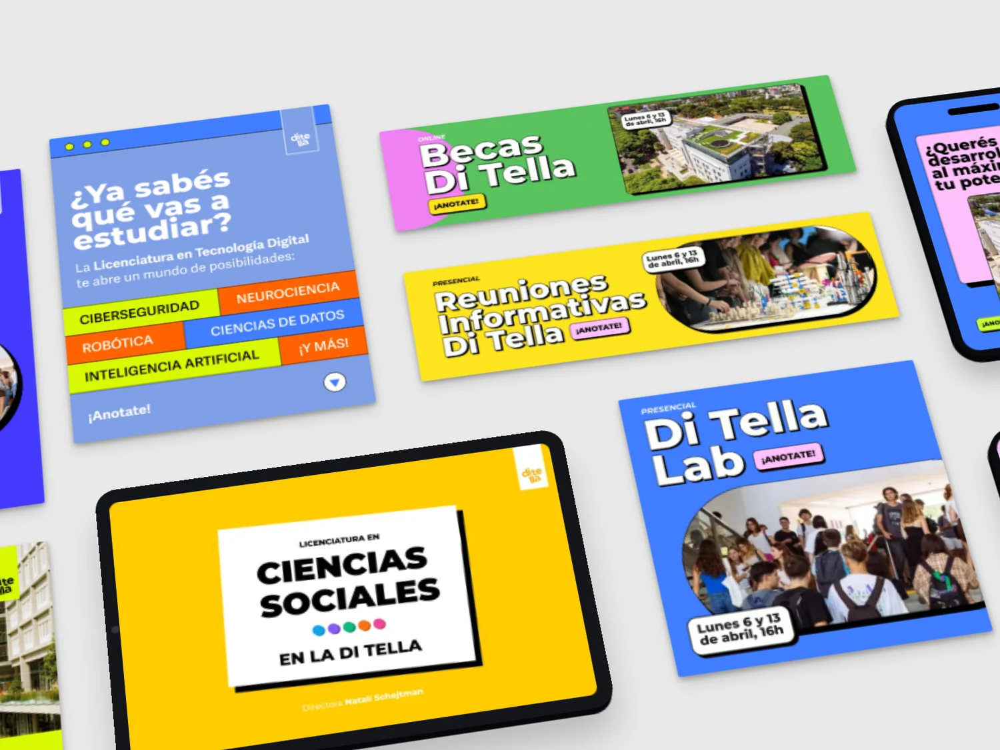

museopioneros
⋯
museopioneros
⋯


325 Me gusta
museopioneros¡Próximamente en el Pioneros!

Cero al Infinito es una propuesta integrada para un circuito cultural en el Parque Los Andes (Chacarita, Buenos Aires), que disuelve los límites físicos y simbólicos entre el Cementerio de la Chacarita y la comunidad que lo rodea.
El proyecto aborda el abandono físico y simbólico tanto del Sexto Panteón del Cementerio de la Chacarita como de su arquitecta, Ítala Fluvia Villa, devolviendo visibilidad a un legado arquitectónico y cultural significativo pero olvidado.


Ubicada en uno de los distritos culturales de mayor crecimiento de Buenos Aires, la propuesta responde a la transformación de Chacarita en un polo de gastronomía, producción audiovisual, turismo y prácticas creativas emergentes.
El Parque Los Andes sigue siendo un espacio público subutilizado. El proyecto lo reimagina como un conector, que canaliza la actividad cultural del barrio hacia el cementerio a través de un recorrido público continuo.

La visibilidad genera valor. Un recorrido elevado funciona a la vez como camino público y como mirador sobre el cementerio, invitando a los visitantes a vincularse con un lugar que durante mucho tiempo estuvo desconectado de la vida urbana cotidiana.
La intervención se refuerza con un museo y una feria pública, que activan el entorno mientras fortalecen la relación entre el cementerio y la ciudad.


El Museo de los Pioneros celebra a pioneros de distintas generaciones, desde figuras históricas como Ítala Fluvia Villa hasta innovadores contemporáneos, creando un diálogo entre pasado y presente mientras preserva su legado.
 museopioneros
⋯
museopioneros
⋯
325 Me gusta
museopioneros¡Próximamente en el Pioneros!
Cero al Infinito refleja la idea central del proyecto: el cero representa a los pioneros y el origen, mientras que el infinito simboliza la continuidad de su legado.
El círculo se vuelve el símbolo que define al proyecto, expresando continuidad, permanencia y memoria viva.


¡Arrastrá!


Próximo proyecto
